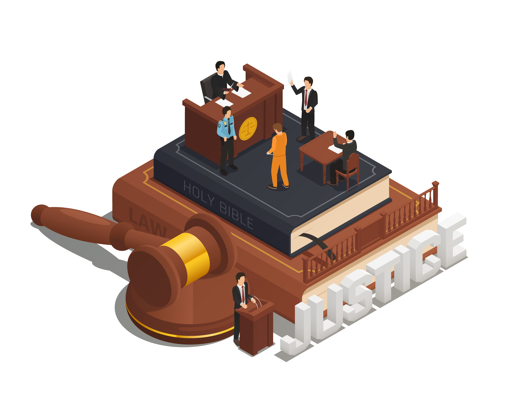

1. Industri 4.0

Ilustrasi Industri 4.0 Industrial automation vector created by pch.vector - www.freepik.com
Era Revolusi Industri keempat ini diwarnai oleh kecerdasan buatan (artificial intelligence), super komputer, rekayasa genetika, teknologi nano, mobil otomatis, dan inovasi. Perubahan tersebut terjadi dalam kecepatan eksponensial yang akan berdampak terhadap ekonomi, industri, pemerintahan, dan politik. Pada era ini semakin terlihat wujud dunia yang telah menjadi kampung global.
Industri 4.0 adalah sebuah istilah yang diciptakan pertama kali di Jerman pada tahun 2011 yang ditandai dengan revolusi digital. Industri ini merupakan suatu proses industri yang terhubung secara digital yang mencakup berbagai jenis teknologi, mulai dari 3D printing hingga robotik yang diyakini mampu meningkatkan produktivitas. Sebelum ini telah terjadi tiga revolusi industri yang ditandai dengan:
- Ditemukannya mesin uap dan kereta api tahun 1750-1930;
- Penemuan listrik, alat komunikasi, kimia, dan minyak tahun 1870-1900
- Penemuan komputer, internet, dan telepon genggam tahun 1960-sekarang.
2. Isu-isu Teknologi
Sebagai pengembang perangkat lunak dan gim, penting bagi kita untuk mengetahui berbagai isu yang berkembang seperti dampak positif negatif pengembangan perangkat lunak, internet of thing, cloud computing, information security, personal branding dan hak kekayaan intelektual.
2.1 Dampak Positif dan Negatif Gim
Seorang anak yang sedang bermain game Sumber: https://www.gettyimages.com
Menurut Anhar (2010:27) Beberapa dampak positif bermain gim adalah sebagai berikut:
- Membantu perkembangan koordinasi tangan, mata, motorik, dan kemampuan spasial
- Meningkatkan kemampuan membuat analisa, keputusan yang cepat dan berpikir secara mendalam
Sedangkan Menurut Anhar (2010: 33), dampak negatif dari gim timbul karena 89% dari gim mengandung beberapa konten kekerasan. Menurut pendapat Darma (2011:67) dampak negatif game online pada siswa atau anak - anak adalah sebagai berikut:
- Anak lebih banyak menghabiskan waktu bermain gim pada jam di luar sekolah
- Konsentrasi belajar terganggu karena pikiran siswa cenderung mengarah pada permainan yang ada di dalam gim
- Tertidur di sekolah
- Sering melalaikan tugas dan tanggung jawab sebagai siswa
- Nilai di sekolah menurun
2.2 Internet of Things (IoT)

Ilustrasi IoT Sumber: Multimedia background vector created by rawpixel.com - www.freepik.com
IoT merupakan segala aktifitas yang pelakunya saling berinteraksi dan dilakukan dengan memanfaatkan internet. Dalam penggunaannya, Internet of Thing banyak ditemui dalam berbagai aktifitas, contohnya : banyaknya transportasi online, e- commerce, pemesanan tiket secara online, live streaming, elearning, dan lain-lain bahkan sampai alat-alat untuk membantu dibidang tertentu seperti remote temperature sensor, GPS tracking, dan sebagainya yang menggunakan internet atau jaringan sebagai media untuk melakukannya.
2.3 Big Data

Ilustrasi Database Data processing vector created by fullvector - www.freepik.com
Big Data, data raya, atau data bandang adalah istilah umum untuk segala himpunan data dalam jumlah yang sangat besar, rumit, dan tak terstruktur sehingga menjadikannya sukar ditangani apabila hanya menggunakan perkakas manajemen pangkalan data biasa atau aplikasi pengolah data tradisional belaka. Big Data juga dapat diartikan sebagai pertumbuhan data dan informasi yang eksponensial dengan kecepatan dalam pertambahannya dan memiliki data yang beragam sehingga menyebabkan tantangan baru dalam pengolahan sejumlah data besar yang heterogen dan mengetahui bagaimana cara memahami semua data tersebut.
Big Data dapat diterapkan di semua aspek yang ada misalnya pada bidang bisnis, kesehatan, pariwisata, pemerintahan, kejahatan, dan lainnya. Dengan menggunakan alat untuk pengambilan ataupun pengolahan datanya misalnya dengan menggunakan perangkat lunak Gephi, Python, Netlytics, NiFi, dan Tableau. Dengan memahami bahwa mahadata itu penting, maka suatu organisasi akan dengan mudah mengolah dan menganalisis sekumpulan data atau suatu permasalahan yang sedang dihadapi baik dari internal maupun eksternal organisasinya. Organisasi tersebut dapat menghemat biaya, menghemat waktu, dan menciptakan sebuah keputusan yang tepat. Sumber: wikipedia.com
2.4 Hak atas Kekayaan Intelektual (HAKI)
Ilustrasi Pengadilan Witness vector created by macrovector - www.freepik.com
HAKI atau Hak atas Kekayaan Intelektual adalah hak eksklusif yang diberikan suatu hukum atau peraturan kepada seseorang atau sekelompok orang atas karya ciptanya. Pada intinya HAKI adalah hak untuk menikmati secara ekonomis hasil dari suatu kreativitas intelektual.
Macam-macam HAKI:
1. Hak Cipta
Hak Cipta adalah hak khusus bagi pencipta untuk mengumumkan atau memperbanyak ciptaannya. Termasuk ciptaan yang dilindungi adalah ciptaan dalam bidang ilmu pengetahuan, sastra dan seni.
Hak cipta diberikan terhadap ciptaan dalam ruang lingkup bidang ilmu pengetahuan, kesenian, dan kesusasteraan. Hak cipta hanya diberikan secara eksklusif kepada pencipta, yaitu “seorang atau beberapa orang secara bersama-sama yang atas inspirasinya lahir suatu ciptaan berdasarkan pikiran, imajinasi, kecekatan, keterampilan atau keahlian yang dituangkan dalam bentuk yang khas dan bersifat pribadi.
2. Hak Kekayaan Industri yang Meliputi:
-
Paten
Berdasarkan Undang-Undang Nomor 14 Tahun 2001 Pasal 1 Ayat 1, Paten adalah hak eksklusif yang diberikan oleh Negara kepada Inventor atas hasil invensinya di bidang teknologi, yang untuk selama waktu tertentu melaksanakan sendiri invensinya tersebut atau memberikan persetujuannya kepada pihak lain untuk melaksanakannya
Paten hanya diberikan negara kepada penemu yang telah menemukan suatu penemuan (baru) di bidang teknologi. Yang dimaksud dengan penemuan adalah kegiatan pemecahan masalah tertentu di bidang teknologi yang berupa : Proses, hasil produksi, penyempurnaan dan pengembangan proses, penyempurnaan dan pengembangan hasil produksi.
-
Merek
Berdasarkan Undang-Undang Nomor 15 Tahun 2001 Pasal 1 Ayat 1 Merek adalah tanda yang berupa gambar, nama, kata, huruf-huruf, angka-angka, susunan warna, atau kombinasi dari unsur-unsur tersebut yang memiliki daya pembeda dan digunakan dalam kegiatan perdagangan barang atau jasa.
Jadi merek merupakan tanda yang digunakan untuk membedakan produk (barang dan atau jasa) tertentu dengan yang lainnya dalam rangka memperlancar perdagangan, menjaga kualitas, dan melindungi produsen dan konsumen.
-
Dan Lain Sebagainya
Sumber teks di atas pada bagian HAKI: lp2m.uma.ac.id
2.5 Pelanggaran HAKI
Pelanggaran hak cipta (dikenal dengan istilah pembajakan) adalah penggunaan suatu materi yang masih dilindungi hak cipta tanpa seizin pencipta atau pemegang haknya, dalam hal ini melanggar hak eksklusif tertentu yang diberikan kepada pemegang hak cipta seperti menggandakan, mereproduksi, mendistribusikan, menampilkan atau memamerkan ciptaan, atau membuat ciptaan turunan. Pemegang hak cipta adalah pencipta, penerbit, atau pihak lain yang diberi mandat untuk memegang ciptaan tersebut. Pemegang hak cipta biasanya menggunakan standar teknologi dan hukum tertentu untuk mencegah dan menghukum pelanggar hak cipta.
Masalah ini biasanya dapat diselesaikan secara kekeluargaan, melalui penarikan dan pemusnahan bajakan, atau dibawa ke pengadilan. Pembajakan skala besar, khususnya juga melibatkan pemalsuan, dapat dituntut melalui sistem hukum pidana. Bergesernya ekspektasi publik, kemajuan teknologi digital, serta berkembangnya jangkauan Internet telah menyebabkan pelanggaran anonim meluas. Hal ini menyebabkan industri kreatif saat ini sukar berfokus untuk mengejar orang-orang yang mencari dan membagikan konten yang dilindungi hak cipta secara daring dan bebas.[butuh rujukan] Bahkan industri kreatif berkeinginan untuk meluaskan hukum ini untuk menghukum penyedia layanan dan distributor perangkat lunak yang memfasilitasi pembajakan sebagai pembajak tidak langsung.
Perkiraan dampak ekonomi dari pelanggaran hak cipta cukup bervariasi dan bergantung pada banyak faktor. Namun demikian, pemegang hak cipta, perwakilan industri, dan legislator telah lama menggolongkan pelanggaran hak cipta sebagai pembajakan atau pencurian - bahasa yang sekarang dianggap oleh beberapa pengadilan AS sebagai peyorasi atau kontroversial. Sumber: wikipedia.com